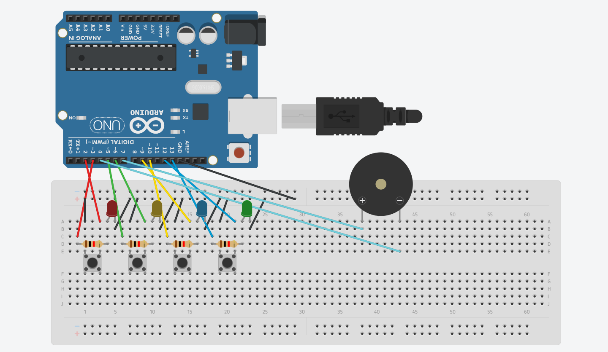
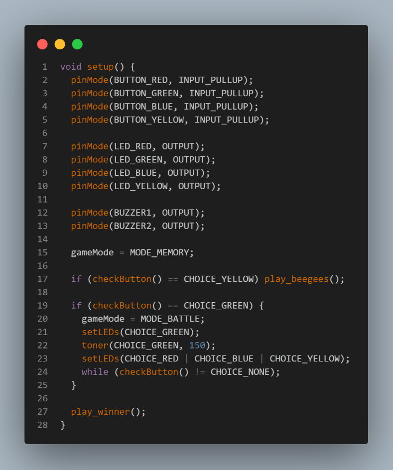
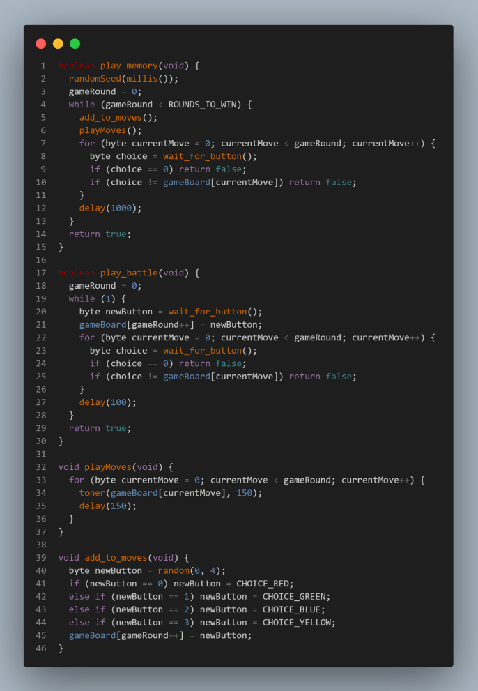
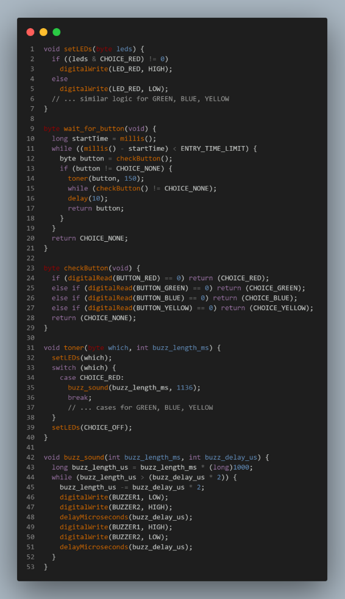
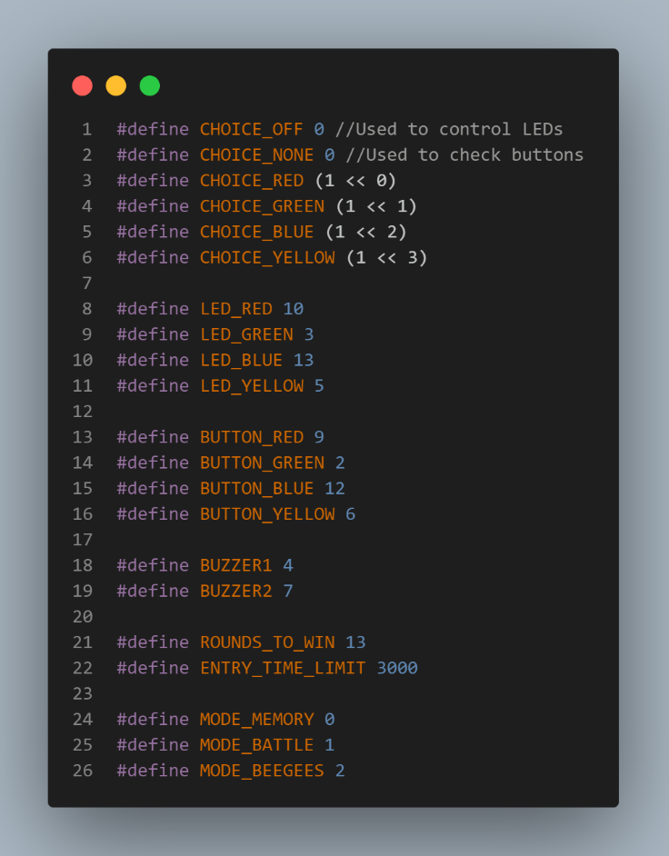
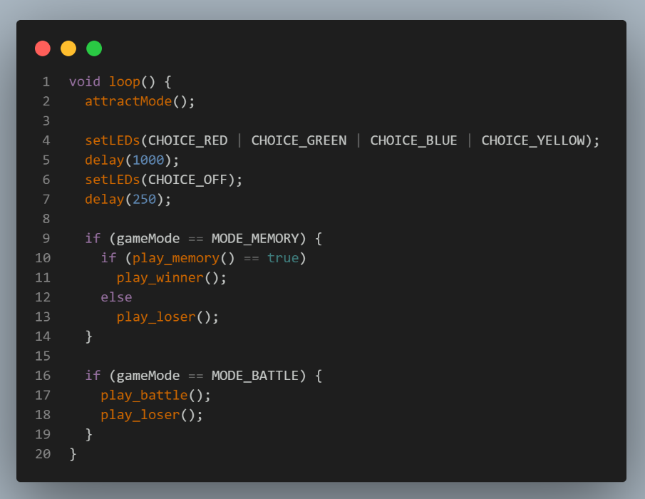

O jogo da memória com luzes (quatro cores) é uma atividade em que o jogador deve memorizar e reproduzir uma sequência de sinais luminosos exibidos por quatro luzes de cores diferentes. A cada rodada, uma nova cor é adicionada à sequência, aumentando o nível de dificuldade. O objetivo é repetir a sequência corretamente pelo maior tempo possível, exercitando atenção, concentração e memória.
Como funciona o arduino?
Ao ligar o Arduino, os LEDs acenderão automaticamente e se iluminarão em sequência até que o jogador pressione um botão para iniciar o jogo da memória.
Requisitos para montagem:- 4 botões de pressão (push buttons)
- 4 LEDs (cores à escolha)
- 4 resistores
- 1 buzzer piezoelétrico (piezo)
- 1 Arduino UNO
- 1 placa de ensaio (protoboard)
- 19 fios (jumpers)

Acessar circuito no TinkerCad





Curiosidades
Notas musicaisO código define um monte de #defines para notas musicais , como NOTE_C4(C 4), NOTE_A4(Lá 4), e assim por diante. Cada uma dessas configurações é um número que representa a frequência da nota em Hertz (Hz) . Por exemplo, NOTE_A4é 440 Hz, a frequência padrão para afinar instrumentos. Quando o jogo toca um som, ele usa essas frequências para fazer o buzzer vibrar e produzir o som correspondente à nota.
O "Easter-egg" dos Bee-GeesUma das partes mais divertidas do código é o "easter egg" dos Bee Gees! Se você segurar o botão amarelo (inferior direito) ao ligar o Arduino, o jogo entra no modo MODE_BEEGEESe começa a tocar uma melodia. O array melody[]contém as notas da música, e a função play_beegees()as reproduz. A função changeLED()faz os LEDs piscarem em sequência, criando um efeito visual que acompanha a música.
Modo de batalha de dois jogadoresAlém do clássico jogo da memória, o código inclui um MODE_BATTLE para dois jogadores. Esse modo é ativado se você segurar o botão verde (superior direito) ao ligar o Arduino. No modo de batalha, os jogadores se revezam adicionando um novo movimento à sequência, e o jogo continua até que um dos jogadores erre.